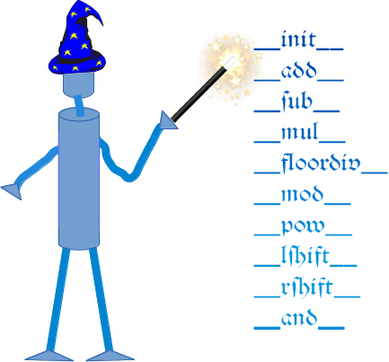
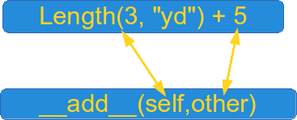
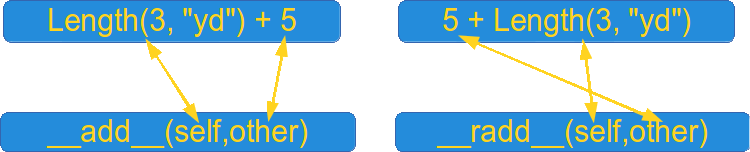

Magic Methods and Operator Overloading
Introduction
 The so-called magic methods have nothing to do with wizardry. You have already seen them in previous chapters of our tutorial. They are the methods with this clumsy syntax, i.e. the double underscores at the beginning and the end. They are also hard to talk about. How do you pronounce or say a method name like __init__? "Underscore underscore init underscore underscore" sounds horrible and is nearly a tongue twister. "Double underscore init double underscore" is a lot better, but the ideal way is "dunder init dunder"1 That's why magic methods methods are sometimes called dunder methods!So what's magic about the __init__ method? The answer is, you don't have to invoke it directly. The invocation is realized behind the scenes. When you create an instance x of a class A with the statement "x = A()", Python will do the necessary calls to __new__ and __init__.
We have encountered the concept of operator overloading many times in the course of this tutorial. We had used the plus sign to add numerical values, to concatenate strings or to combine lists:
>>> 4 + 5 9 >>> 3.8 + 9 12.8 >>> "Peter" + " " + "Pan" 'Peter Pan' >>> [3,6,8] + [7,11,13] [3, 6, 8, 7, 11, 13] >>> It's even possible to overload the "+" operator as well as all the other operators for the purposes of your own class. To do this, you need to understand the underlying mechanism. There is a special (or a "magic") method for every operator sign. The method The magic method for the "+" sign is the __add__ method. For "-" it is "__sub__" and so on. We have a complete listing of all the magic methods a little bit further down.
The mechanism works like this: If we have an expression "x + y" and x is an instance of class K, then Python will check the class definition of K. If K has a method __add__ it will be called with x.__add__(y), otherwise we will get an error message.
Traceback (most recent call last): File "<stdin>", line 1, in <module> TypeError: unsupported operand type(s) for +: 'K' and 'K'
Overview of Magic Methods
Binary Operators
| Operator | Method |
|---|---|
| + | object.__add__(self, other) |
| - | object.__sub__(self, other) |
| * | object.__mul__(self, other) |
| // | object.__floordiv__(self, other) |
| / | object.__div__(self, other) |
| % | object.__mod__(self, other) |
| ** | object.__pow__(self, other[, modulo]) |
| << | object.__lshift__(self, other) |
| >> | object.__rshift__(self, other) |
| & | object.__and__(self, other) |
| ^ | object.__xor__(self, other) |
| | | object.__or__(self, other) |
Extended Assignments
| Operator | Method |
|---|---|
| += | object.__iadd__(self, other) |
| -= | object.__isub__(self, other) |
| *= | object.__imul__(self, other) |
| /= | object.__idiv__(self, other) |
| //= | object.__ifloordiv__(self, other) |
| %= | object.__imod__(self, other) |
| **= | object.__ipow__(self, other[, modulo]) |
| <<= | object.__ilshift__(self, other) |
| >>= | object.__irshift__(self, other) |
| &= | object.__iand__(self, other) |
| ^= | object.__ixor__(self, other) |
| |= | object.__ior__(self, other) |
Unary Operators
| Operator | Method |
|---|---|
| - | object.__neg__(self) |
| + | object.__pos__(self) |
| abs() | object.__abs__(self) |
| ~ | object.__invert__(self) |
| complex() | object.__complex__(self) |
| int() | object.__int__(self) |
| long() | object.__long__(self) |
| float() | object.__float__(self) |
| oct() | object.__oct__(self) |
| hex() | object.__hex__(self |
Comparison Operators
| Operator | Method |
|---|---|
| < | object.__lt__(self, other) |
| <= | object.__le__(self, other) |
| == | object.__eq__(self, other) |
| != | object.__ne__(self, other) |
| >= | object.__ge__(self, other) |
| > | object.__gt__(self, other) |
Example class: Length
We will demonstrate in the following Length class, how you can overload the "+" operator for your own class. To do this, we have to overload the __add__ method. Our class contains the __str__ and __repr__ methods as well. The instances of the class Length contain length or distance information. The attributes of an instance are self.length and self.unit.This class allows us to calculate expressions with mixed units like this one:
2.56 m + 3 yd + 7.8 in + 7.03 cm
The class can be used like this:
>>> from unit_conversions import Length >>> L = Length >>> print(L(2.56,"m") + L(3,"yd") + L(7.8,"in") + L(7.03,"cm")) 5.57162 >>>
The listing of the class:
class Length:
__metric = {"mm" : 0.001, "cm" : 0.01, "m" : 1, "km" : 1000,
"in" : 0.0254, "ft" : 0.3048, "yd" : 0.9144,
"mi" : 1609.344 }
def __init__(self, value, unit = "m" ):
self.value = value
self.unit = unit
def Converse2Metres(self):
return self.value * Length.__metric[self.unit]
def __add__(self, other):
l = self.Converse2Metres() + other.Converse2Metres()
return Length(l / Length.__metric[self.unit], self.unit )
def __str__(self):
return str(self.Converse2Metres())
def __repr__(self):
return "Length(" + str(self.value) + ", '" + self.unit + "')"
if __name__ == "__main__":
x = Length(4)
print(x)
y = eval(repr(x))
z = Length(4.5, "yd") + Length(1)
print(repr(z))
print(z)
If we start this program, we get the following output:
4 Length(5.593613298337708, 'yd') 5.1148
We use the method__iadd__ to implement the extended assignment:
def __iadd__(self, other):
l = self.Converse2Metres() + other.Converse2Metres()
self.value = l / Length.__metric[self.unit]
return self
Now we are capable to write the following assignments:
x += Length(1)
x += Length(4, "yd")
We have added 1 metre in the example above by writing "x += Length(1))". Most certainly, you will agree with us, that it would be more convenient to simply write "x += 1" instead. We also wnat to treat expressions like "Length(5,"yd") + 4.8" similarly. So, if somebody uses a type int or float, our class takes it automatically for "metre" and converts it into a Length object. It's easy to adapt our __add__ and "__iadd__" method for this task. All we have to do is to check the type of the parameter "other":
def __add__(self, other):
if type(other) == int or type(other) == float:
l = self.Converse2Metres() + other
else:
l = self.Converse2Metres() + other.Converse2Metres()
return Length(l / Length.__metric[self.unit], self.unit )
def __iadd__(self, other):
if type(other) == int or type(other) == float:
l = self.Converse2Metres() + other
else:
l = self.Converse2Metres() + other.Converse2Metres()
self.value = l / Length.__metric[self.unit]
return self
It's a safe bet that if somebody works for a while with adding integers and floats from the right sight, that he or she wants to to the same from the left side! So let's try it out:
>>> from unit_conversions import Length >>> x = Length(3, "yd") + 5 >>> x = 5 + Length(3, "yd") Traceback (most recent call last): File "<stdin>", line 1, in <module> TypeError: unsupported operand type(s) for +: 'int' and 'Length' >>>
Of course, the left side has to be of type "Length", because otherwise Python tries to apply the __add__ method from int, which can't cope with Length objects as second arguments!
Python provides a solution for this problem as well. It's the __radd__ method. It works like this: Python tries to evaluate the expression "5 + Length(3, 'yd')". First it calls int.__add__(5,Length(3, 'yd')), which will raise an exception. After this it will try to invoke Length.__radd__(Length(3, "yd"), 5). It's easy to recognize that the implementation of __radd__ is analogue to __add__:
def __radd__(self, other):
if type(other) == int or type(other) == float:
l = self.Converse2Metres() + otherLength.__radd__(Length(3, "yd"), 5)
else:
l = self.Converse2Metres() + other.Converse2Metres()
return Length(l / Length.__metric[self.unit], self.unit )
It's advisable to make use of the __add__ mathod in the __radd__ method:
def __radd__(self, other):
return Length.__add__(self,other)
The following diagram illustrates the relationship between __add__ and __radd__:

Standard Classes as Base Classes
It's possible to use standard classes - like int, float, dict or lists - as base classes as well.We extend the list class by adding a push method:
class Plist(list):
def __init__(self, l):
list.__init__(self, l)
def push(self, item):
self.append(item)
if __name__ == "__main__":
x = Plist([3,4])
x.push(47)
print(x)
Footnotes
1 as suggested by Mark Jackson